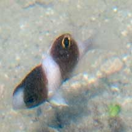
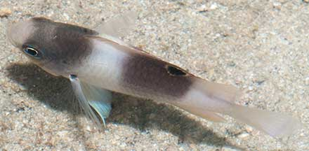
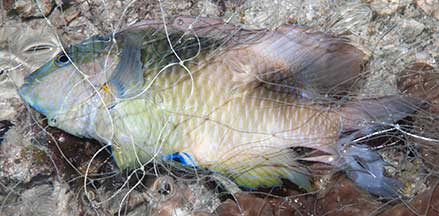

|
|
| fishes text index | photo index |
| Phylum Chordata > Subphylum Vertebrata > fishes > Family Pomacentridae |
| Honey-head
damsel Dischistodus prosopotaenia Family Pomacentridae updated Oct 2020 Where seen? Juveniles of this fish are sometimes seen on near our reefs. Elsewhere, adults are found iin lagoons and coastal reefs, usually in silty areas, may be solitary or in groups. Features: To 16cm, juveniles seen about 2cm long. Juveniles with a white body, two broad honey brown bars, one through the eyes, and another in the middle of the body, with a large gold-margined black spot on the dorsal fin. The adult looks different, honey brown with a white breast lacking dark blotches, a broad pale bar in the middle of the body, head with blue lines. |
|
 Juvenile. St John's Island, May 14 |
 Juvenile. Pulau Semakau, Oct 11 |
 Adult caught in a fishing net. Terumbu Semakau, Jun 11 |
| Honey-head damsels on Singapore shores |
On wildsingapore
flickr
|
| Other sightings on Singapore shores |
Acknowlegement Links
References
|